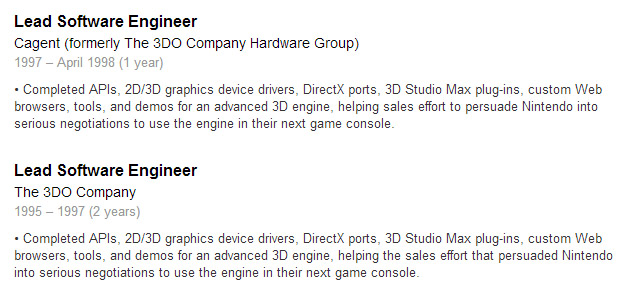
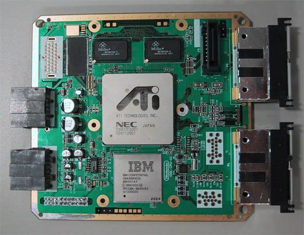
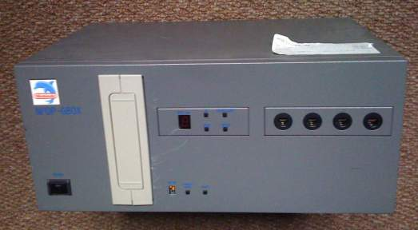
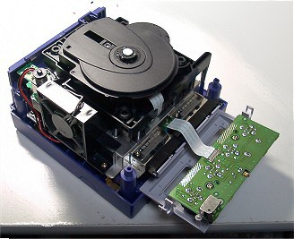

Inside of the Peacock Room in San Francisco’s Mark Hopkins hotel, Silicon Graphics chairman Jim Clark announced an agreement to create the technology for Nintendo’s next gen console, the Ultra 64. An animated 3-D image of Mario is projected onto a movie screen behind Clark. “Jeeeemy, I may be a big star, but I don’t let it go to my head,” said the CGI animated Mario. Jim Clark turned his head to the animated Mario and responded,”Mario, I’d like to be the first to welcome you to your new home at Silicon Graphics. I think you’re really going to have a nice, happy time here.” At one point, Silicon Graphics was considered to become the next Apple, and received praise for their state of the art technology used on films such as “Jurassic Park” and “Terminator 2”.
Edward McCracken, the president and CEO of Silicon Graphics, released a statement: “By pooling the best and brightest talent from both our companies, [Nintendo Ultra 64] will propel Silicon Graphics’ leading digital media technologies into homes everywhere. Nintendo’s financial and technical investment combined with Silicon Graphics’ engineering resources will enable our two companies to continue leading the visual computing and home entertainment industries in the ’90s.”
Unfortunately, those happy times at Silicon Graphics were about to come to an end. One year after Nintendo signed the Project Reality deal with Silicon Graphics, drama was gradually escalating behind the scenes causing analysts to question whether Jim Clark was slowly losing power over the company. Multiple reports detail a power struggle over the company with constant fighting back and forth between Jim Clark (Chairman) and Ed McCracken (Chief Executive).
“Fucking Ed McCracken,” shouted Jim Clark. “That fucking Ed McCracken”. According to the book, “The New, New Thing” written by author Michael Lewis, Clark would call him “Fucking Ed McCracken” so many times that employees at Silicon Graphics started thinking that was his real name. Lewis explains in his book, “Clark would say McCracken may have helped to stabilize the company, but now he’s destroying it. He can’t see what’s happening.”
Jim Clark knew personal computers would one day perform everything that a Silicon Graphics workstation could do. Clark could see trouble brewing from a mile away with Microsoft quickly dominating the market for personal computers. “You could see a time when the PC would be able to do the sort of graphics that SGI machines did,” said Clark. “And SGI would be toast. Eventually, Microsoft would take over its business.”
He believed that the only way SGI’s business could survive is if they created more mass market products with their technology. These beliefs are what lead Silicon Graphics to create a chipset for the Nintendo 64. Basing their business around mass market products was a vision that McCracken and venture capitalists like Glenn Mueller didn’t share. With Ed McCracken and Glenn Mueller running the show, Clark was quickly losing power over the company. Clark had sold 40 percent stake in Silicon Graphics to Glenn Mueller and kept 15 percent stake for himself. As time passed by, Clark regretted the decision, and he started to believe Mueller had cheated him and his engineers out of a significant amount of money.
“I was saying, ‘Goddamn we’re out of our minds,” said Jim Clark during an interview. “I was so worried about the PC. I was adamant that we had to build a low-end product, and that it had to be something that sold for under five grand.”
The book “The New, New Thing” talks about how Clark used business meetings to insult Ed McCracken’s character and lack of foresight. McCracken would break out into tears as Clark described everything that was wrong with him. Author Michael Lewis says, “One time, Clark replaced the nameplate on McCracken’s door with one that said ED MCMUFFIN (the joke grew out of the inability of Clark’s teenage daughter to recall McCracken’s name). For four days, no one noticed. Clark would later haunt McCracken at board meetings with references to this incident, heaping insult upon humiliation.”
In 1994, Jim Clark resigned from Silicon Graphics, one year after Nintendo signed a deal with Silicon Graphics. His resignation raised many eyebrows at Nintendo of America, and it would be the first of many blows to the relationship between Nintendo and Silicon Graphics. Glenn Mueller, the man that Clark felt cheated him and his engineers, caught wind that Clark was starting up a new company called “Netscape”. Mueller had made some bad investments, and he begged Clark to let him be part of this new company. Clark rejected him multiple times, and on the day that Netscape was officially founded, Mueller shot himself in the head.
That same year, Silicon Graphics releases a video to show off the capabilities of their Nintendo Ultra 64 technology. Thomas A. Jermoluk, the president of Silicon Graphics, is the man that you first see in this video. You may also remember Jermoluk as the person who revealed Nintendo 64 at the E3 press conference with Howard Lincoln and Peter Main. Unfortunately, Silicon Graphics, the company behind the cutting edge technology of the Nintendo 64, transformed into a frat house by the year 1997. According to a BusinessWeek article, insiders describe a July ’96 European Sales conference where managers and executives were getting drunk and carousing into the after hours. President/COO Thomas A. Jermoluk (and several colleagues) were seen mooning other SGI employees at one the company’s annual lip-synch contests. Another incident in Hawaii talks about Jermoluk drinking and throwing up at a poolside sales meeting.
Jermoluk said, ”Am I guilty of getting drunk a few times?’ ”Sure. Probably inappropriately at times? Yeah. Did I party hard? Was I leading a wild life? No. I was working too hard, man.” A former executive told BusinessWeek that employees weren’t used to seeing the president get drunk.
On August 1st, 1996, Thomas Jermoluk resigned as president from Silicon Graphics, two months before the Nintendo 64 would launch in North America. With Clark and Jermoluk both gone, most of the people that Nintendo of America had trusted at Silicon Graphics were no longer there. Edward McCracken would assume Jermoluk’s duties when the company was still going through major transitions.
As Silicon Graphics accumulated losses, the company’s employees and board members remained optimistic that CEO Edward R. McCracken would eventually turn things around. But after McCracken’s marriage fell apart, he established a public relationship with a younger SGI employee. Sources told BusinessWeek that McCracken was constantly walking with stars in his eyes while SGI employees were in a funk. BusinessWeek said there were times when nobody bothered to coordinate introduction schedules at SGI’s product divisions. Other incidents include SGI computers shutting down without warning or engineers discovering flaws in the microprocessors that would cost the company millions of dollars. Employees lost confidence in McCracken’s ability to lead the company, and many of their most talented engineers left to pursue better opportunities.
On October 1997, Ed McCracken resigned from Silicon Graphics, and between 700 to 1000 employees (9 percent out of a 11,000 total workforce) were laid off.
The news of Ed McCracken stepping down caused Nintendo to rethink their relationship with Silicon Graphics and begin searching for a new partner. Silicon Graphics was struggling to retain a contract with Nintendo for their next gen console.”Nintendo has been looking to replace MIPS as its chief source of microprocessors for game units since last year, when former SGI CEO Ed McCracken stepped down. Nintendo was nervous about SGI’s commitment to low-end 64-bit processors,” according to CNET.
Next Gen Magazine described Silicon Graphics having arguments with Nintendo over component profits after the Nintendo 64’s American’s launch MSRP was lowered at the last minute before launch. Although both companies eventually worked out a deal, the arguments rubbed Nintendo the wrong way, and SGI would no longer be considered a guaranteed partner for Nintendo’s post N64 game console.
Unfortunately, Nintendo’s quest to find a new chip-maker wouldn’t be easy. The industry’s top 3D chip experts were being lured away by NEC and Nvidia, and Nintendo was running out of options for potential partners with their new console design team. One group that showed serious interest in developing Nintendo’s post-N64 console was The 3DO Company Hardware Group.
According to the LinkedIn account of a software engineer named Rene Eiffert, 3DO’s negotiations with Nintendo lasted from 1995 through 1997 (the year after Nintendo 64 launched in North America). The 3DO Company Hardware Group later changed their name to Cagent, and negotiations with Nintendo started back up again in 1997 through April 1998. Both Linkedin listings below describe a sales effort to persuade Nintendo into serious negotiations to use an engine in their next game console.
3DO’s hardware division had operated under the name 3DO Systems which developed and sold their M2 technology to Panasonic for over $100 million. Eventually, 3DO decided to exit the hardware business and sell off their hardware division to Samsung where it was renamed to CagEnt. Cagent owned multiple technologies like a realtime MPEG encoding system, a DVD playback system, and a completed game console with brand new chip designs. Next Gen Magazine said, “The MX chipset was a dramatically enhanced version of the M2 chipset sold to Panasonic and Matsushita, now capable of a 100 million pixel per second fillrate and utilizing two PowerPC 602 chips at its core. (CagEnt’s executives also boasted of a four million triangle per second peak draw rate, though the quality of those tiny triangles would of course have been limited).”
Rene Eiffert’s Linkedin Page:
Next Gen Magazine reported that Nintendo executives Howard Lincoln and Genyo Takeda had visited CagEnt’s facilities. By late 1997, Nintendo made a formal offer to acquire CagEnt from Samsung. According to Next Gen Magazine:
“As purchase negotiations continued, Nintendo worked with CagEnt engineers on preliminary plans to redesign the MX architecture around a MIPS CPU, as Nintendo’s manufacturing partner NEC has a MIPS development license but none to produce the PowerPC 602. Nintendo and CagEnt flip-flopped on whether the finished machine would include a built-in CD-ROM or DVD-ROM as its primary storage medium, with Nintendo apparently continuing to insist that ROM cartridges would remain at the core of its new game system. Yet as DVD and MPEG technologies would have been part of the CagEnt acquisition, Nintendo would probably have found some reasonable use for those patents eventually. The MX-based machine was to be ready for sale in Japan in fall 1999 — in other words, development of games for the new console would begin within literally months, starting with the shipment of dev kits to key teams at Rare and Nintendo’s Japanese headquarters.”
The clock was winding down. Nintendo wanted to release their next gen console as soon as Fall 1999 and as late as holiday 2000, but they would get hit by a string of bad luck. Samsung and Nintendo couldn’t reach a final agreement on the ownership of CagEnt, and Samsung would eventually sell CagEnt to Microsoft where it would become the Web TV division. After the CagEnt deal fell through, Nintendo shifted their focus to a small company named ArtX, made up of former Silicon Graphics engineers who designed Nintendo 64’s hardware. Nintendo’s visit sparked debate inside of ArtX about how a relationship with Nintendo could impact them in the long run.
“We said we really didn’t want to divert ourselves, but Nintendo can make a pretty compelling argument and it was a pretty huge opportunity, so we decided to go ahead in mid-98,” said Tim Van Hook, chief designer for the Nintendo 64 and founder of ArtX.
For a new company like ArtX, the opportunity to work with Nintendo seemed too good to pass up. ArtX eventually forged a deal to develop the Flipper Chip for Nintendo’s next gen console, and in return, ArtX received royalties from Nintendo.
But not everyone was thrilled over this new agreement. SGI filed a trade secret violation against ArtX for using SGI’s secret information to directly compete against SGI and steal away their partners. SGI and MIPS threatened multiple lawsuits including: Engaging in unfair competition, misappropriated trade secrets, interfering with prospective economic advantage, and breaching contract. Some of the ArtX employees named in suit included ArtX Chief executive Wei Yen and ArtX founder Tim Van Hook.
“I not only want to get the company performing to where it needs to, but we will also be protecting our intellectual property and we intend to reinforce this,” said Richard Belluzzo, the new CEO of Silicon Graphics.
ArtX’s Greg Buchner told EETimes, “They [Nintendo] had given up on SGI. The last of the people they trusted were gone, and they went looking for the people. It’s not a company-to-company thing for [Nintendo]; it’s a person-to-person thing.”
By May 28, 1998, Silicon Graphics would eventually drop its lawsuit with ArtX. Nintendo, who previously contributed $45 million annually to the profits of MIPS Group, would officially break off their relationship. Ex-SCI employees told The Register that the lawsuit was dropped because SGI didn’t want to intimidate Nintendo.
On May 4, 1999, the internet swirled with rumors from an IGN article describing Nintendo’s next gen console code-named Dolphin. The source told IGN that four companies (Rare, Retro Studios, EAD, and NST) already had development kits and were currently in the process of creating software for the Dolphin.”Management is claiming better graphics than the PSX2 (PlayStation 2),” a Nintendo insider told IGN64. “And supposedly it will run on DVD, but that’s still a big maybe at this point.” The article continues, “The buzz is that the system is a lot easier to program for than the Nintendo 64. And it appears Art-X [the system’s graphics chip provider] managed to slap out a nasty chipset for pretty cheap.”
During Nintendo’s press conference at E3 1999, Nintendo of America Chairman Howard Lincoln took the stage to officially announce their next gen console. Lincoln told the press that Nintendo’s next gen console would be code-named “Dolphin,” and it would be “extremely powerful and not expensive”. He announced that the graphics chip would be developed by Art X, and they would be lead by Dr. Wei Yen who was responsible for the N64’s graphics chip.
Lincoln told the audience, “We are absolutely confident that Dolphin’s graphics will equal or exceed anything our friends at Sony can come up with for Playstation 2.”
The Dolphin would feature a 400 MHz CPU called the Gekko processor which would be created by IBM. In addition, Lincoln announced that Dolphin would not feature ROM cartridges which resulted in applause from the press. He remained quiet on what type of medium that Dolphin would use instead.
Lincoln wrapped up his speech, “We’ve lifted the curtain a little on Dolphin. But we aren’t going to lift it all the way. We’re going to continue to be very circumspect in revealing all of Dolphin’s specs… for a very simple reason — there are more technological surprises to come, and we’d like to keep them just that — surprises — for you and especially for our competitors. But as I stand here this afternoon, I think Nintendo is very well positioned to take on Sony and Sega.”
Delaying Launch From 2000 to 2001
On October 19, 1999, Nintendo ordered more than 300 billion yen ($2.8 billion) worth in conductors for it’s next-generation machine, codenamed “Dolphin”. The first round of semiconductors would be ready by August 2000. According to IGN, NEC announced that they would spend an estimated 80 billion yen ($761 million) to construct a factory in southern Japan. This factory would concentrate on the production of memory and graphics semiconductors for the Dolphin. Nintendo’s Hiroshi Imanishi spoke on the challenges of keeping Dolphin’s costs down when the price of semiconductors keep increasing.
“We will need to make it cheaper than PlayStation 2,” said Imanishi.
Although Hiroshi Imanishi was never a household name, he was second in command during his tenure at Nintendo, and he spoke on behalf of former Nintendo president, Hiroshi Yamauchi.
Yamauchi echoed Imanishi’s comments about pricing. He believed that pricing should be as low as possible so more consumers can play the software.
“A game machine that sells for close to 40000 yen [$380] can be bought by young people old enough to work part-time jobs, but at any rate, is too expensive to be aimed at children. The Dolphin will not be that expensive.” said Yamauchi. In a seperate interview, he further elaborated, “People do not play with the game machine itself. They play with the software, and they are forced to purchase a game machine in order to use the software. Therefore the price of the machine should be as cheap as possible.”
In 2000, many consumers patiently waited for the launch of Sony’s highly anticipated PlayStation 2. That didn’t stop Nintendo executives from hyping up a possible Dolphin launch around the same time-frame. They would also take an opportunity to downplay PlayStation 2’s graphical performance.
“We plan to stick to this date,” promised Nintendo’s Managing Director Sales & Marketing, Axel Herr. He then spoke on Dolphin’s specs: “In terms of graphics, we came up with extremely fast chip architecture that, according to our technicians, will be 33% above the projected performance data of [Sony’s] PlayStation 2. That’s easily twice as fast as [Sega’s] Dreamcast.”
Some analysts believed Sony’s PlayStation would have never gained a significant lead in market share if the Nintendo 64’s launch hadn’t experienced constant delays. Nintendo promised that they wouldn’t make this mistake again with their next gen hardware. Yamauchi reconfirmed Nintendo’s plans to launch Dolphin shortly after PlayStation 2 in late 2000. “We would like to release the Dolphin closer to the PS2, but since we’re aiming for the Christmas 2000 shopping season, I don’t think the time difference is that big of a handicap,” said Yamauchi.
A Nintendo 64 developer told IGN that if “Perfect Dark” and “Donkey Kong 64” sell well, Nintendo wouldn’t release their next generation hardware until 2001. If Nintendo feels threatened by the competition, then the next Nintendo console would release October 2000. Another source told IGN that Nintendo was planning to ship the console by October 2000, but some people in the company weren’t entirely convinced it was possible.
Unfortunately, ‘Dolphin’ missed the targeted Christmas 2000 shopping season. The delay would give Sony the advantage of releasing their console one year before its competitors. For investors, the delay of Dolphin’s launch felt like Nintendo 64 all over again, where Sony accumulated market share before N64 had a chance to launch. According to Nintendo’s Hiroshi Imanishi, the reason for Dolphin’s delay was obvious — the software wasn’t ready.
“It’s always the case with Nintendo, the hardware is already completed, but the software is not,” said Imanishi.
Nintendo downplayed the disappointment of the delay, and said the delay was good because it allowed fans to spend more money on games for the Nintendo 64.
“A 2001 launch for Project Dolphin is not only in keeping with the normal product lifespan for our home consoles, but provides two important benefits,” said Peter Main, Nintendo’s executive vice president of sales and marketing. “First, it allows the millions of current Nintendo 64 owners to devote their video game dollars to the best lineup of new games in our history-without having to buy a new system. Secondly, the new launch date for Dolphin means that our system will come to market next year with a portfolio of game names across all genres that simply can’t be matched by any other company.”
Howard Lincoln was later quizzed by GameSpot about whether Dolphin would be harmed by the delay. GameSpot reminded Lincoln that Nintendo 64 was the last to launch against Sega Saturn and Sony PlayStation.
Lincoln replied, “I think the key in this is that if you look at the N64 experience, I don’t think we were hurt at all by being late or after Sony. Very likely we were hurt by the number of games – but the number of games had more to do with problems with development tools, and we won’t make the same mistake again on the Dolphin.” He later adds, “We’re not so concerned about being late, as much as we’re concerned about focusing on taking care of any disadvantages we may have had. Or in other words, maximizing our competitive advantages – franchises, characters, and things of that sort. In terms of technology, I’m absolutely convinced the Dolphin will be as good as the PlayStation2. I’m sure they’re both going to look just super.”
The Developer Friendly System
Throughout the lifespan of the Nintendo 64, the company faced criticism for not having third party developers in mind when creating the Nintendo 64’s hardware and development tools. Nintendo of America Chairman Howard Lincoln would publicly apologise for the lack of third party support. “With the complexity of N64 technology it is incumbent upon us, and good business sense, to fully support third parties through the development process. To date, I don’t think we have provided as much support as we did with the Super NES and NES platforms,” said Lincoln.
Years later, Lincoln would reflect back on the Nintendo 64 days, and promised that we wouldn’t see a repeat of that situation. “I would say that we are deliberately making the Dolphin easy to program for – very strong development tools – because we learned our lesson with the Nintendo 64,” said Lincoln.
Miyamoto spoke on the challenges of Nintendo 64 development and the transition from 2D to 3D game development. He believed that the struggles some third parties faced during the N64 era were necessary because it forced weaker developers out of the industry and made the remaining developers much stronger.
“It was hard to develop for the Nintendo 64, especially because the software libraries were delayed. However, the Nintendo 64 truly brought developers into the era of 3D, and there were bound to be problems with that,” said Miyamoto. “I suppose developers who have been working with pseudo-3D on the PlayStation, are now finding themselves playing catch-up working in real 3D on the PlayStation 2. In that sense, I think the PlayStation 2 is even harder to develop for than the Nintendo 64. Nintendo 64 weeded out weaker developers at an early stage.In the long term, I think that was necessary. Almost a rite of passage.”
Shigeru Miyamoto believed that developers who have grown comfortable creating Nintendo 64 software won’t find Dolphin difficult to develop. Due to the GameCube’s power, he didn’t think developers would have to put in so much work into creating special effects like the Nintendo 64. Instead of dealing with difficult hardware, developers could spend more energy into the actual projects.
Shigeru Miyamoto said, “When the transition from one platform to another is occurring, the technology is different and everything is difficult as far as new technology is concerned. Having said that, there should be some advantage to making games for Nintendo’s new platform because when Nintendo 64 launched to the market it was already the next next-generation system. In other words, Nintendo 64 already realized a complete 3D technology when it was shifted from Super Nintendo. So, those developers who have already created good software for Nintendo 64 are already in a stage where they will be able to produce good software for Dolphin. In the case of Nintendo 64, we have to be very experienced. We have to have full knowledge in what will be able to run on the console. When it comes to Dolphin, it’s so powerful that we don’t have to put so much energy in making some special effects and sophisticated movement. In other words, we can put priority on the realization of our own game ideas, rather than trying to make some special effect work.”
Genyo Takeda, director and general manager of Nintendo, understood that there was a cultural divide between Nintendo and the engineers at Silicon Valley. But since many of the ArtX designers were former members of Silicon Graphics, the culture clash between the two companies would be smoothed over, and they worked toward the goal of succeeding with Dolphin where they failed with Nintendo 64. Takeda believed that no one standout technology should dominate the Dolphin’s hardware. Instead, he asked ArtX, IBM, and Nintendo to create well-balanced technology that worked together in harmony with each other.
“The most difficult issue in the Dolphin project was the gap between the technology-driven culture in Silicon Valley and our intention to pursue entertainment. It was most difficult to ask Valley engineers to swallow their pride,” said Takeda in an interview with the eetimes. “Through discussion, we could establish a good relationship with them because the partners in Silicon Valley are mostly the same members who worked for Nintendo 64. We told them, ‘Let’s achieve what we could not do with Nintendo 64”
Howard Cheng, technical director at Nintendo Technology Development, was an SGI engineer who collaborated on Nintendo 64 development and then joined Nintendo a few years later. Cheng worked as the liaison between Nintendo and Silicon Valley engineers.
“Takeda gave me a very simple requirement, to make a high-performance machine that game developers can effectively work with,” Cheng said. “That itself is very difficult to ask as the speed of the processor and everything is so fast today. Balancing everything is very tricky, and it has to have a good price for consumers. That continues to be most challenging.”
Greg Buchner said ArtX and Nintendo worked on Dolphin [GameCube] for over three years to figure out what should be the main priorities in helping developers create software. The most important priority was to create a high performance machine that would fight the rising costs of game development.
“We thought about the developers as our main customers. In particular for GameCube, we spent three years working with Nintendo of America and with all sorts of developers, trying to understand the challenges, needs, and problems they face,” said Buchner. He further elaborates, “First among these is the rising cost of development. The GameCube can see high performance without too much trouble; it isn’t a quirky design, but a very clean one. It was important we didn’t require jumping through hoops for high performance to be achieved. On top of that, it is rich in features, and we worked to include a dream group of technical features that developers requested.”
ArtX kept notes of what developers liked or disliked about programming for the PlayStation (PS One). Since the PlayStation was originally planned as a collaboration between Sony and Nintendo, Nintendo already had an understanding of how Sony’s engineers approached console design. ArtX had also received informatio on the PlayStation 2’s architecture before Sony even made their console’s specs public. Another mistake Sony made was going public with their specs and architecture one year before the PS2’s launch. This would give ArtX even more time to analyze the PlayStation 2’s flaws.
“The GameCube [Dolphin] has been made from scratch, and is a very new architecture and design, but we certainly looked at what had gone well and what hadn’t for the PlayStation. There is a long history of working with Nintendo and their legacy, plus we got an inkling of how PlayStation 2 was going to be. We drew from all those different consoles in terms of what was right and the direction we should go, what directions we should avoid. With that said, it wasn’t like we copied anything,” said Buchner.
Buncher continued, “They [Sony] went public with what the PS2 was going to be spec-wise and architecture-wise about a year before the product launched, which is a long time. When we saw their design, it really validated to us that we had made the right choice and done something different and efficient. They [Sony] made some mistakes in the architecture, and it made us feel good about what we had created.” He later adds, “From a very high level, going from the PlayStation to the PS2, they made it harder to develop for. With the GameCube [Dolphin], we made it much easier to work with than the Nintendo 64. From a development point of view, it looks like they went in the opposite direction we went, and that isn’t good.”
Shigeru Miyamoto heard from developers that Sony had created a console that was more difficult to make games for than the Nintendo 64.
“Well, of course I’ve never worked on the PS2 hardware, so I really don’t know, but what I’ve heard from many different people is that they have somehow created a machine that is even more difficult to make games for than the N64. In terms of the Gamecube, we have created the hardware so that it’s much easier to program for than N64, and yet we can guarantee several dozens of times better performance than N64. In other words, Gamecube is probably far superior to the PS2 in terms of the friendliness for game developers,” said Miyamoto
To ensure that GameCube was more developer friendly, Nintendo brought developers on board to help influence the hardware’s design. One of those developers was Martin Hollis, the director of Goldeneye 007 and Perfect Dark for the Nintendo 64.
“My responsibilities were chiefly to advise on the development of GameCube at Nintendo Technology Development Inc. (NTD). This little known group was newly created to architect and direct the development of GameCube hardware and associated software. My role was to bring the point of view of a game developer to the table, and to ensure the hardware was game developer friendly,” said Hollis. “The experience was fascinating, as I have always loved hardware and enjoyed having a full and deep understanding of what is going on under the hood. The chance to influence and to learn more about hardware design was very exciting. I learned an enormous amount from Howard Cheng in that era, especially on the subject of high level architecture and console design strategy.
ArtX spent most of 1998 figuring out what the Flipper chip needed to be, and by 1999, they cranked out the silicon and produced the first part of the chip. In 2000, the final silicon was ready for production, and it was shown at Spaceworld 2000 along with various tech demos.